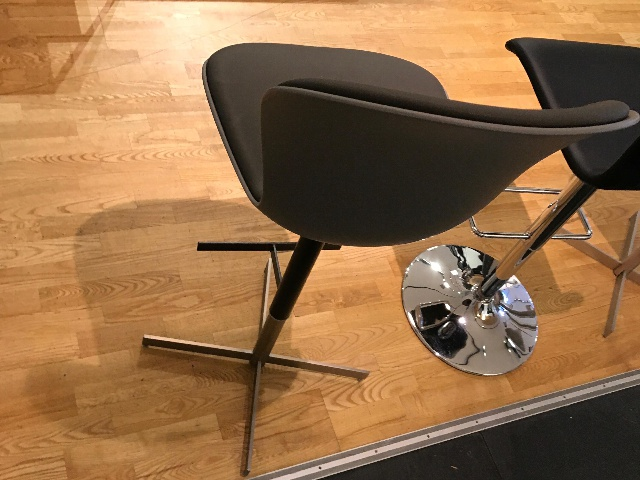
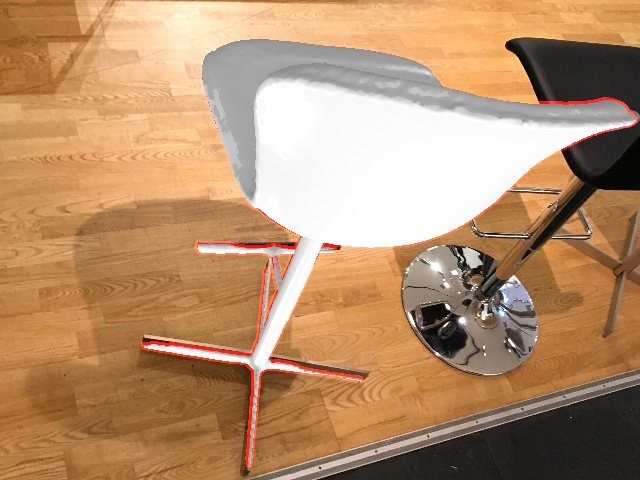
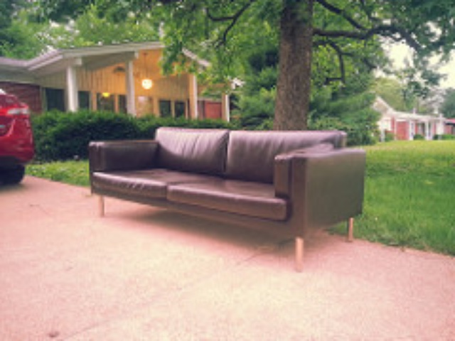
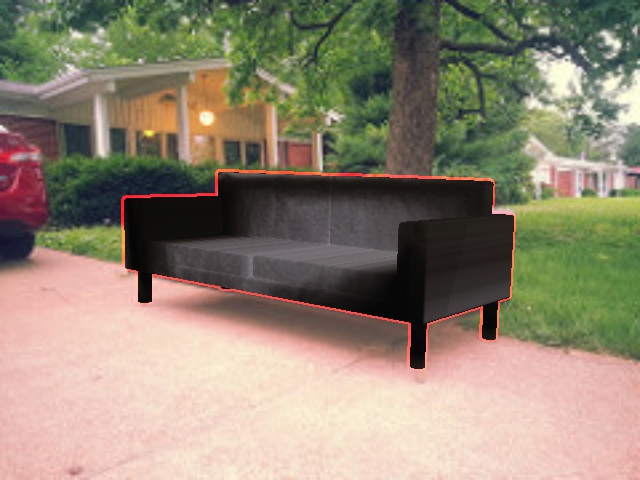
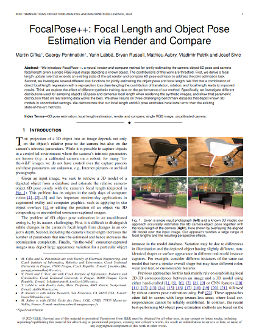

FocalPose++: Focal Length and Object Pose Estimation
via Render and Compare
*equal contribution




Given a single input photograph (left) and a known 3D model, our approach accurately estimates the 6D camera-object pose together with the focal length of the camera (right), here shown by overlaying the aligned 3D model over the input image. Our approach handles a large range of focal lengths and the resulting perspective effects.
Abstract
We introduce FocalPose++, a neural render-and-compare method for jointly estimating the camera-object 6D pose and camera focal length given a single RGB input image depicting a known object.
The contributions of this work are threefold.
First, we derive a focal length update rule that extends an existing state-of-the-art render-and-compare 6D pose estimator to address the joint estimation task.
Second, we investigate several different loss functions for jointly estimating the object pose and focal length. We find that a combination of direct focal length regression with a reprojection loss disentangling the contribution of translation, rotation, and focal length leads to improved results.
Third, we explore the effect of different synthetic training data on the performance of our method. Specifically, we investigate different distributions used for sampling object's 6D pose and camera's focal length when rendering the synthetic images, and show that parametric distribution fitted on real training data works the best.
We show results on three challenging benchmark datasets that depict known 3D models in uncontrolled settings. We demonstrate that our focal length and 6D pose estimates have lower error than the existing state-of-the-art methods.
Approach Overview
FocalPose overview. Given a single in-the-wild RGB input image \(I\) of a known object 3D model \(\mathcal{M}\), parameters \(\theta^k\) composed of focal length \(f^k\) and the object 6D pose (3D translation \(t^k\) and 3D rotation \(R^k\)) are iteratively updated using our render-and-compare approach. Rendering \(R\), together with the input image \(I\), are given to a deep neural network \(F\) that predicts update \(\Delta \theta_k\), which is then converted into parameter update \(\theta^{k+1}\) using a non-linear update rule \(U\).
Applications
Application in robotics: object manipulation from Internet video.
Given an input video with a known object, we estimate its 6D pose in each video frame.
In the first frame, we estimate object's 6D pose and camera focal length using our method (coarse and refiner model).
In the following frames, we reuse the 6D pose and focal length from the previous frame as initialization and apply only the refiner to track the object.
To obtain the final trajectory, we use the estimated median focal length, recompute z-translation accordingly, and apply trajectory smoothing.
Finally, we compute inverse kinematics and imitate the object manipulation with a Franka Emika Panda in simulation and on the real robot.
Application in computer graphics: 3D-aware image augmentation.
Given an input image (first column), we estimate the camera focal length and 6D pose of the table using our FocalPose++ approach (second column).
The estimated geometry of the table allows us to randomly place three new 3D objects on the table and render them in the original image (third and fourth column).
Note how the new objects are inserted into the scene respecting its geometry and perspective effects.
Paper and Supplementary Material
|

|
M. Cífka, G. Ponimatkin, Y. Labbé, B. Russell, M. Aubry, V. Petrík, J. Sivic.
FocalPose++: Focal Length and Object Pose Estimation via Render and Compare.
TPAMI, 2024.
(hosted on ArXiv)
|
@article{cifka2024focalpose++,
title={{F}ocal{P}ose++: {F}ocal {L}ength and {O}bject {P}ose {E}stimation via {R}ender and {C}ompare},
author={C{\'\i}fka, Martin and Ponimatkin, Georgy and Labb{\'e}, Yann and Russell, Bryan and Aubry, Mathieu and Petrik, Vladimir and Sivic, Josef},
journal={IEEE Transactions on Pattern Analysis and Machine Intelligence},
year={2024},
publisher={IEEE},
pages={1-17},
doi={10.1109/TPAMI.2024.3475638}
}
|
Acknowledgements
This work was partly supported by the Ministry of Education, Youth and Sports of the Czech Republic through the e-INFRA CZ (ID:90140), the French government under management of Agence Nationale de la Recherche as part of the "Investissements d'avenir" program, reference ANR19-P3IA-0001 (PRAIRIE 3IA Institute), and by the European Union's Horizon Europe projects euROBIN (No. 101070596), AGIMUS (No. 101070165), ERC DISCOVER (No. 101076028) and ERC FRONTIER (No. 101097822). Views and opinions expressed are however those of the author(s) only and do not necessarily reflect those of the European Union or the European Commission. Neither the European Union nor the European Commission can be held responsible for them.